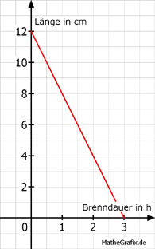

Lineare Funktionen Aufgabe 44 Eine Kerze hat eine Länge von 12 cm. Sie ist nach 3 Stunden abgebrannt. a) Tragen sie die fehlenden Werte für die Kerzenlange l in Abhängigkeit von der Brenndauer t ein. b) Wie lang ist die Kerze nach 75 Minuten in cm? c) Die Kerze steht in einem Wasserbad und soll nach 135 Minuten ausgehen. Wie hoch muss das Wasser in cm stehen? a) Die Kerze brennt 12 cm/3 h = 4 cm/h ab. Die Funktionsgleichung für die Abhängigkeit der Kerzenlänge l von der Brenndauer t lautet: l = 12 - 4 * t t in min 30 150 l in cm 10 2 30 min = 30/60 h = 0,5 h 150 min = 150/60 h = 2,5 h l(0,5)> = 12 - 4 * 0,5 = 10 cm l(2,5) = 12 - 4 * 2,5 = 2cm  b) 75 min = 75/60 h = 1,25 h K(1,25) = 12 - 4 * 1,25 = 7 cm c) 135 min = 135/60 h = 2,25 h K(2,25) = 12 - 4 * 2,25 = 3 cm